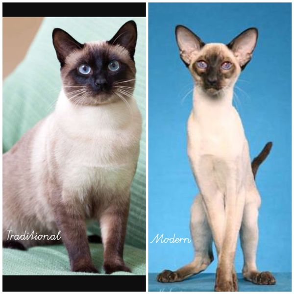

The Siamese cat comes in two distinct variations: traditional, with an apple-shaped head and a slightly chubby body; or the modern Siamese, which are very skinny and have a wedge-shaped head..  Wiki info about Siamese cat Thay can speak!